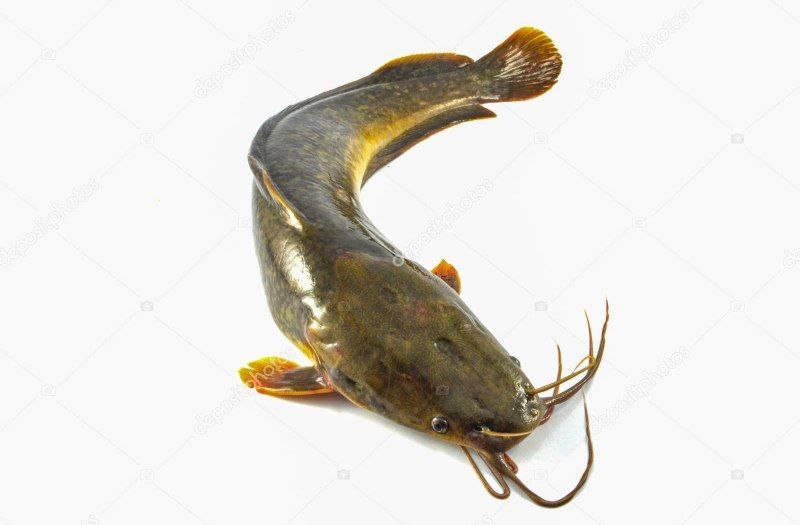
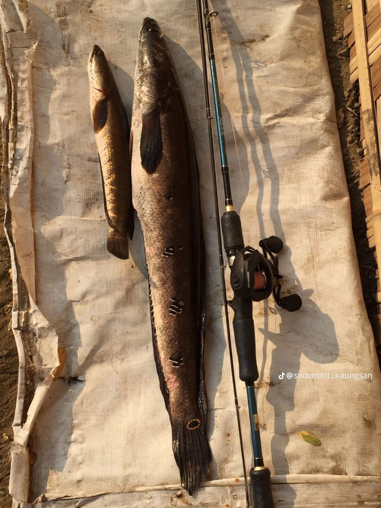
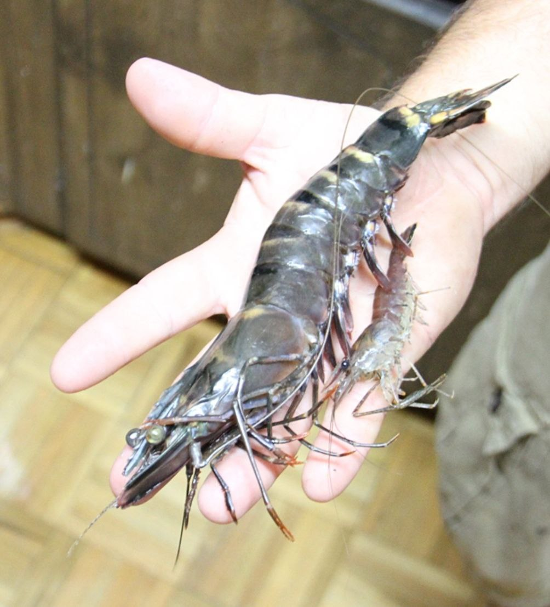
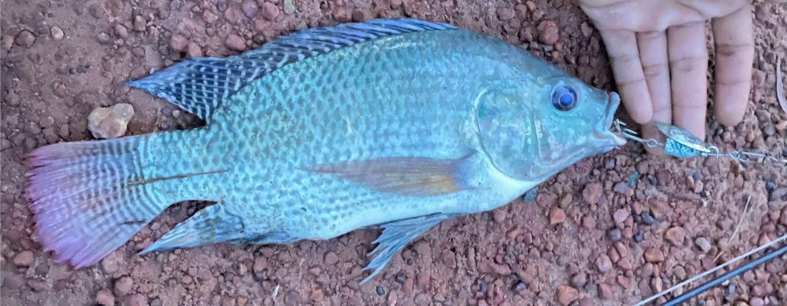
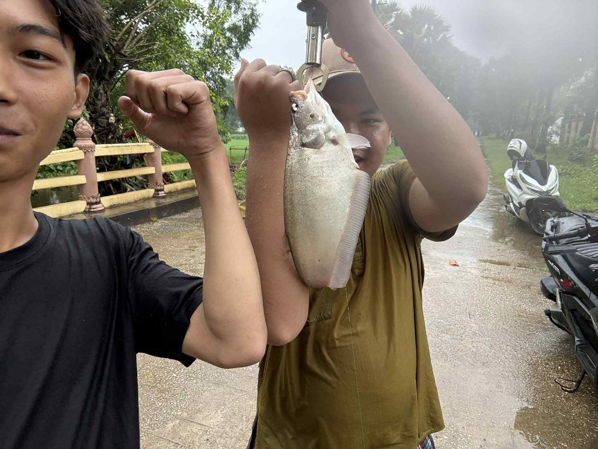
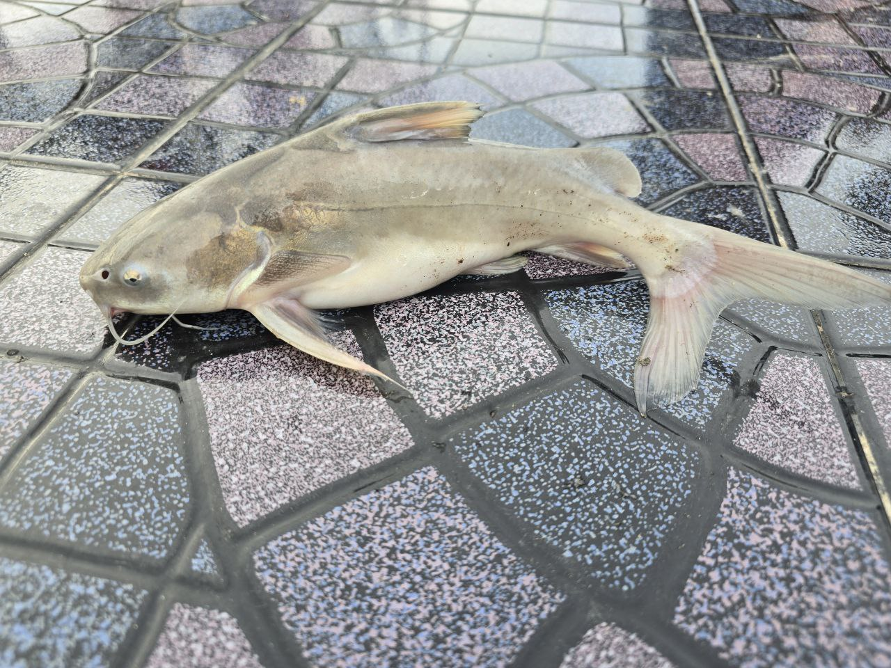
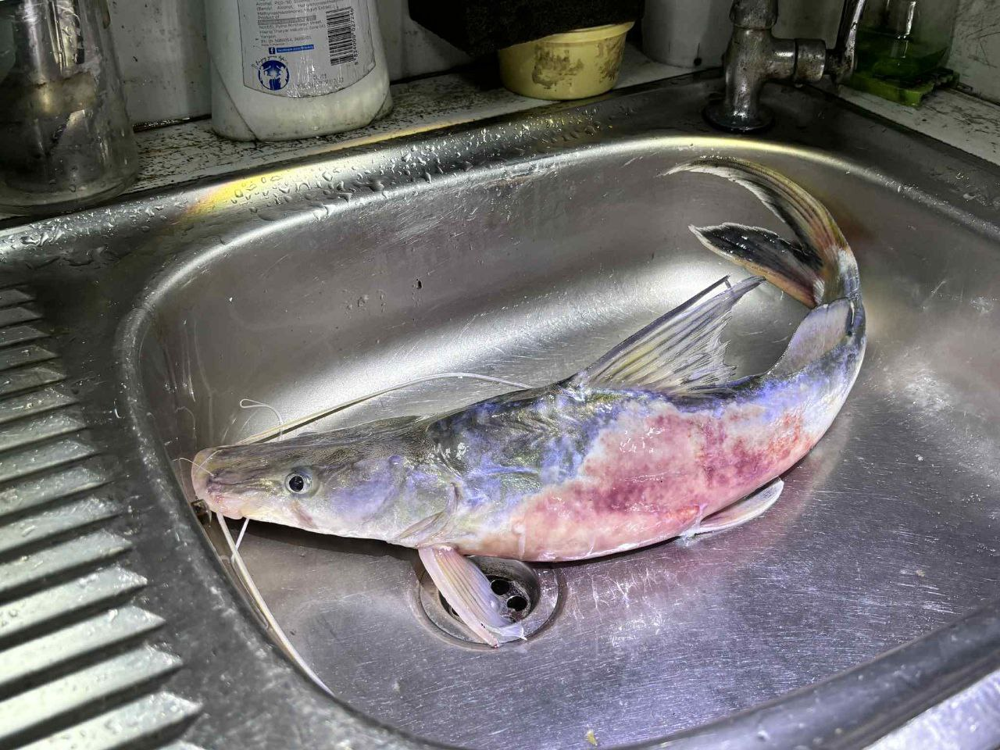
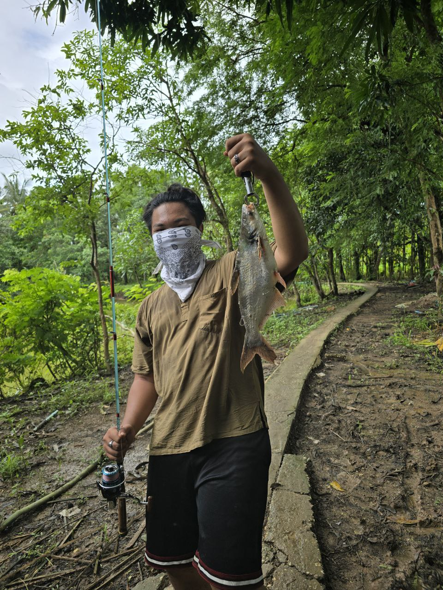

Top Fishing Regions
- Inle Lake
- Ayeyarwady River
- Tanintharyi Coast
- Delta & Mangroves
Popular Species
- Catfish
- Snakehead Fish
- Tiger Prawn
- Tilapia
- Chitala chitala
- Rita Rita
- Sperata seenghala
- Gagata Gagata
Fishing Seasons
Cool & Dry (Nov–Feb), Hot Season (Mar–May), Monsoon (Jun–Oct)
Responsible Fishing Tips
- Check local rules and regulations
- Handle fish carefully
- Leave no trace
- Respect local communities
Photo Gallery








📍 GPS Tracker (Myanmar)
Default view: Myanmar map. Click “Start Tracking”.
Latitude
—
Longitude
—
Accuracy
—
Altitude
—
Speed
—
Heading
—
Works best with GPS-enabled devices. Requires HTTPS (or localhost) for location.